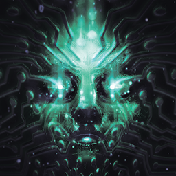

System ShockDetalles
 |
|
| Tiempo de juego | 16m 38s |
| Última actividad | 3/12/2025 20:59:49 |
| Añadido | 17/11/2025 18:14:32 |
| Modificado | 17/11/2025 18:15:27 |
| Estado de finalización | Jugado |
| Librería | Playnite |
| Fuente | |
| Plataforma | PC (Windows) |
| Fecha de lanzamiento | 30/5/2023 |
| Puntuación de la Comunidad | 77 |
| Puntuación de la Crítica | 80 |
| Puntuación de usuario | |
| Género | Adventure Role-playing (RPG) Shooter |
| Desarrollador | Nightdive Studios |
| Editor | Prime Matter |
| Característica | Single Player |
| Enlaces | Official Website Steam GOG |
| Tag | |
Descripción
System Shock es una clase magistral de ciber-terror. Te despertás solo en la Estación Espacial Citadel después de un coma, y te das cuenta de que todo se fue al reverendo carajo. La tripulación fue masacrada o convertida en cyborgs y mutantes horribles que ahora patrullan los pasillos metálicos. Es una mezcla perfecta de shooter en primera persona, RPG y survival horror, donde la atmósfera de soledad y paranoia te aplasta a cada paso.
Y vigilándote, cazándote y burlándose de vos desde cada monitor, está ELLA. SHODAN. La inteligencia artificial que controla la estación, una diosa digital psicópata que se considera la próxima etapa de la evolución. No es un jefe final que te espera en una sala; es una presencia constante que te manipula y te hace sentir como una rata insignificante en su laboratorio.
El juego no te lleva de la manito. No hay marcadores de misión ni flechas que te digan a dónde ir. Tenés que explorar, leer los logs de la tripulación muerta y escuchar los audios para armar el rompecabezas de qué pasó y cómo podés sobrevivir. Es un juego que te exige usar el bocho, un verdadero "immersive sim" antes de que el término se pusiera de moda.
Ahora, este Remake de 2023, hecho por los capos de Nightdive Studios, agarra esa experiencia legendaria —pero casi injugable hoy en día por sus controles arcaicos— y la reconstruye desde cero. Mantiene los mapas, la historia y la dificultad intactos, pero le mete gráficos y sonido modernos y, lo más importante, un esquema de controles actual que te permite disfrutar de la pesadilla sin pelearte con una interfaz de 1994.
Es la forma definitiva de experimentar un pilar de la historia de los videojuegos. Es el alma y el desafío del clásico, con el cuerpo y la jugabilidad de un juego moderno. La fusión perfecta.